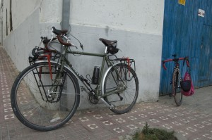

The cyclist´s machine

Almost every bicycle is suitable for practising cycle-touring.Although travelling on a bmx could be a little uncomfortable, climb a mountain road on a single speed is an unnecessary effort as well as going downhill with a full loaded fix bike would be very dangerous.
Nowadays the bicycle industry offer a great diversity of products.
But what would be the suitable bike?
It must be: comfortable enough for riding several hours a day, tough and durable because a full loaded cycle weight at least 15 kg more. Tires must be polyvalent, you must be able to use them off road too. A thick tires grip better than a slim ones but you would ride slower with the first on the road.
As an advise 35c or 1.5″ wide with round section an some deep drawing (tire print).
All of this is just about comfort, reliability and efficient.
Think about your necessities and choose your materials.
Leave a Reply